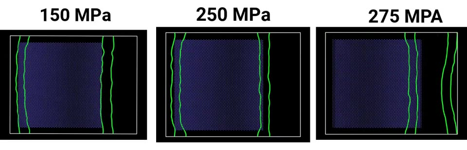

Published · Molecular dynamics
Size-dependent strengthening in nickel superalloys
The MD study identifies two scaling regimes in the critical resolved shear stress of paired edge dislocations interacting with γ′ precipitates, and links the transition to their core width.
Computational Materials Science · 2025
Read the article